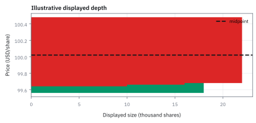
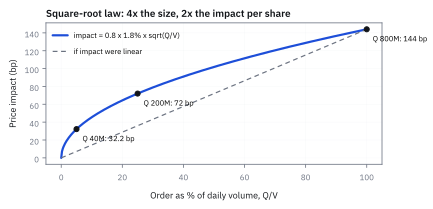
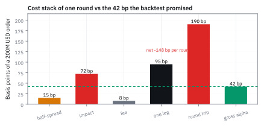
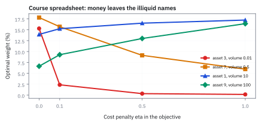

18.5 Market Microstructure
ราคากลางบนจอไม่ใช่ราคาที่ซื้อขายได้: คำสั่งจริงเสียครึ่ง spread ค่าธรรมเนียม และ impact ที่ตัวเองดันราคา ซึ่งมักใหญ่ที่สุดและโตตามขนาดคำสั่ง
backtest ของกลยุทธ์หนึ่งบอกว่าได้ 0.42% ต่อรอบ ถือรอบละ 5 วัน ปีละ 50 รอบ รวม +21% ต่อปี พอร์ต \$200 ล้านซื้อหุ้นราคา \$50 ที่ซื้อขายกันวันละ \$800 ล้าน ความผันผวนรายวัน 1.8% bid \$49.925 ask \$50.075 ค่าธรรมเนียมขาละ 0.08% ทีมบอกว่า “ต้นทุนมีแค่ค่าธรรมเนียม ไปกลับ 0.16% ยังเหลือ 0.26% ต่อรอบ” ผลตอบแทนจริงต่อปีคือเท่าไร?
ลองตอบก่อนเปิดเฉลย
ติดลบราว 74% ต่อปี ขาเดียวเสียครึ่ง spread 15 bp ค่าธรรมเนียม 8 bp และ impact ที่คำสั่งขนาดหนึ่งในสี่ของปริมาณทั้งวันดันราคาเองอีก 72 bp รวม 95 bp ไปกลับ 190 bp หรือ \$3.8 ล้านต่อรอบ เทียบกำไรก่อนต้นทุน \$840,000 ขาดทุนรอบละ \$2.96 ล้าน ทั้งปี 50 รอบคือ $50(0.42\%-1.90\%)=-74\%$ ค่าธรรมเนียมที่ทีมนับเป็นก้อนที่เล็กที่สุด
สิ่งที่เราจะสร้าง
ทุกหัวข้อก่อนหน้าสมมติว่าซื้อขายได้ที่ราคาเดียวไม่จำกัดจำนวน 18.4 แตะต้นทุนด้วยค่าธรรมเนียม 10 bp หน้านี้เปิดดูว่าคำสั่งจริงเดินผ่าน order book อย่างไร และต้นทุนแยกเป็นกี่ก้อน ซึ่ง 24.3 ใช้ต่อตอนวัด implementation shortfall และ 18.6 ใช้ตอนหาวิธีแบ่งคำสั่ง
ลำดับคือ กิน order book ด้วยมือ วัดสภาพคล่องแบบนับปริมาณและแบบคิดเป็นต้นทุน แยกต้นทุนหนึ่งคำสั่งเป็นครึ่ง spread กับ impact อ่าน spread จากราคาซื้อขายอย่างเดียวด้วยแบบจำลองของ Roll ใช้กฎรากที่สองและฟังก์ชัน Kissel–Glantz ของคอร์สประมาณ impact แล้วตอบโจทย์เปิดหน้า หาทางแก้ และจบที่การใส่ต้นทุนเข้าไปในการเลือกพอร์ตตั้งแต่ต้น
ศัพท์ที่ใช้ในหัวข้อนี้
- Order book, bid และ ask
- รายการคำสั่งที่รอจับคู่ เรียงตามราคา bid คือราคาสูงสุดที่มีคนรอซื้อ ask คือราคาต่ำสุดที่มีคนรอขาย แต่ละราคามีจำนวนหุ้นจำกัด
- Spread และ midpoint
- spread คือ ask ลบ bid midpoint คือค่ากลางของสองราคา ใช้เป็นเกณฑ์วัดต้นทุน แต่ไม่มีใครซื้อขายที่ midpoint ได้จริง
- Market order และ limit order
- market order ยอมข้าม spread เพื่อได้ของทันที limit order วางราคาไว้แล้วรอ ได้ราคาดีกว่าแต่ไม่รู้ว่าจะได้ของเมื่อไร หรือได้เลยไหม
- Price impact
- ราคาที่ขยับเพราะคำสั่งของเราเอง คำสั่งยิ่งใหญ่เทียบปริมาณทั้งวันยิ่งดันแรง และเป็นต้นทุนก้อนใหญ่ที่สุดของคำสั่งใหญ่
- Effective, realized half-spread และ adverse selection
- effective คือราคาที่ได้ห่างจาก midpoint ตอนส่งคำสั่ง realized คือห่างจาก midpoint หลังคำสั่งจบ ถ้า realized ติดลบ คนที่ขายให้เราขาดทุน เพราะคำสั่งเรามีข้อมูล ซึ่งเรียกว่า adverse selection
- VWAP และ TWAP
- ราคาเฉลี่ยของวันถ่วงด้วยปริมาณ และราคาเฉลี่ยถ่วงเวลาเท่ากัน ใช้เป็นเป้าของการทยอยส่งคำสั่ง และเป็นเกณฑ์เทียบว่าซื้อได้แพงหรือถูก
สัญลักษณ์และหน่วย
| สัญลักษณ์ | ความหมาย | หน่วย |
|---|---|---|
| $b,\ a,\ m$ | bid, ask และ midpoint $m=(a+b)/2$ | \$ ต่อหุ้น |
| $Q,\ V$ | ขนาดคำสั่ง และปริมาณซื้อขายทั้งวัน | หุ้น หรือ \$ |
| $\bar P$ | ราคาเฉลี่ยที่ได้จริง | \$ ต่อหุ้น |
| $\sigma$ | ความผันผวนรายวัน | ต่อวัน |
| $I,\ Y$ | impact เป็นสัดส่วนของราคา และตัวคูณที่ต้องประมาณจากข้อมูล | สัดส่วน, ไม่มีหน่วย |
| $s,\ q_t$ | ครึ่ง spread และเครื่องหมายคำสั่ง (+1 ซื้อ, −1 ขาย) | \$, ไม่มีหน่วย |
ขั้นที่ 1 — กิน order book ด้วยมือ
order book ใน Figure 18.5a มีหุ้นวางขายสามชั้น: 10,000 หุ้นที่ \$100.04, 16,000 หุ้นที่ \$100.06 และ 22,000 หุ้นที่ \$100.08 ฝั่งซื้อสูงสุดคือ \$100.00 ซื้อ 40,000 หุ้นด้วย market order ต้องกินขึ้นไปทีละชั้นจนครบ
ป้ายบอก \$100.04 แต่มีของแค่ 10,000 หุ้นที่ราคานั้น ราคาเฉลี่ยจริงคือ \$100.062 $C$ คือเงินที่จ่ายเกิน midpoint คือ \$1,680 ครึ่ง spread (2 เซนต์ต่อหุ้น) อธิบายได้ \$800 อีก \$880 มาจากการกินลึกลงไปในชั้นที่แพงกว่า ถ้าซื้อแค่ 20,000 หุ้นจะเฉลี่ย \$100.05 ต้นทุนต่อหุ้นโตตามขนาดคำสั่ง
ถ้าสั่ง 50,000 หุ้น ของที่แสดงทั้งสามชั้นมีแค่ 48,000 อีก 2,000 หุ้นต้องรอคนมาวางขายใหม่ ซึ่งมักมาที่ราคาสูงขึ้น
Figure 18.5a — order book สมมติที่แสดงบนจอ

แกนตั้งคือราคา แกนนอนคือจำนวนหุ้นที่แสดง (พันหุ้น) แท่งเขียวคือฝั่งซื้อ 18,000 ที่ 99.96, 12,000 ที่ 99.98 และ 10,000 ที่ 100.00 แท่งแดงคือฝั่งขาย 10,000 ที่ 100.04, 16,000 ที่ 100.06 และ 22,000 ที่ 100.08 เส้นประคือ midpoint 100.02 ข้อมูลสมมติ ไม่ใช่หุ้นจริง ของที่แสดงอาจถูกถอนทันทีที่คำสั่งใหญ่เริ่มกิน
ขั้นที่ 2 — วัดสภาพคล่องสองแบบ: นับปริมาณ หรือคิดเป็นต้นทุน
คอร์สนิยามหุ้นที่มีสภาพคล่องว่า ซื้อขายได้เร็ว ราคาขยับน้อยตอนเราซื้อขาย และซื้อขายก้อนใหญ่ได้ วัดได้สองแบบ แบบนับปริมาณ เช่น turnover คือปริมาณต่อวันหารด้วยจำนวนหุ้นทั้งหมด และแบบคิดเป็นต้นทุน เช่น spread เป็นเปอร์เซ็นต์ของราคา สมมติหุ้นตัวนี้ซื้อขายวันละ 2 ล้านหุ้น จากทั้งหมด 500 ล้านหุ้น
turnover บอกว่าหาคู่ค้าง่ายแค่ไหน แต่ไม่บอกว่าคำสั่งของเราจะเสียเท่าไร แบบคิดเป็นต้นทุนตอบตรงกว่า: spread 4 bp แปลว่าคำสั่งเล็กที่สุดเสียครึ่งหนึ่งคือ 2 bp แต่คำสั่ง 40,000 หุ้น (2% ของปริมาณทั้งวัน) เสีย 4.2 bp มากกว่าสองเท่า
คอร์สยกเครื่องมือแบบต้นทุนอีกสามตัว: VWAP เป็นเกณฑ์เทียบราคา ตารางต้นทุนตามขนาดคำสั่งของ Loeb และฟังก์ชันของ Kissel กับ Glantz ในขั้นที่ 6
ขั้นที่ 3 — แยกต้นทุนหนึ่งคำสั่ง: effective, impact และ realized
โจทย์ให้อะไรมาบ้าง: หุ้นของโจทย์เปิดหน้า midpoint ก่อนส่งคำสั่ง \$50.00 ซื้อได้ที่ \$50.075 (ask) หลังคำสั่งจบ midpoint ขึ้นไปอยู่ที่ \$50.36 ทุกตัววัดเทียบ midpoint ก่อนส่งคำสั่ง
คำตอบ: เราจ่ายเกิน midpoint 15 bp ตอนซื้อ คำสั่งเราดัน midpoint ขึ้น 72 bp และคนที่ขายให้เราที่ 50.075 ขาดทุน 57 bp เมื่อเทียบกับ midpoint ใหม่ realized ที่ติดลบคือหลักฐานของ adverse selection: คนตั้งราคาขายของให้คำสั่งที่รู้ทางมากกว่า
ตรวจเองใน 10 วินาที: $-57+72=15$ ตรงกับแถวสุดท้าย เพราะแยก $50.075-50.00$ เป็น $(50.075-50.36)+(50.36-50.00)$
ขั้นที่ 4 — อ่าน spread จากราคาซื้อขายอย่างเดียว: แบบจำลองของ Roll
ถ้ามีแค่ราคาที่ซื้อขายจริง ไม่มี order book จะรู้ spread ได้ไหม? Roll สมมติว่าราคาซื้อขาย $P_t$ คือ midpoint $m_t$ ที่เดินสุ่ม บวกหรือลบครึ่ง spread $s$ ตามว่าคำสั่งนั้นเป็นซื้อ ($q_t=+1$) หรือขาย ($-1$) โดย $q_t$ สุ่มอิสระ ค่าเฉลี่ยศูนย์ และ $q_t^2=1$ แล้วหา covariance ของการขยับสองครั้งติดกัน
กางวงเล็บได้สี่พจน์ สามพจน์เป็นผลคูณของ $q$ คนละเวลาซึ่งค่าเฉลี่ยเป็นศูนย์ เหลือ $-q_{t-1}^2$ ส่วน $u_t$ ไม่เกี่ยวกับ $q$ และไม่สัมพันธ์กันข้ามเวลาจึงหายไป ความหมาย: ซื้อที่ ask แล้วมักตามด้วยขายที่ bid ราคาจึงเด้งกลับ การขยับติดกันจึงสัมพันธ์เป็นลบ
ถ้าวัดได้ $\gamma_1=-0.0004$ จะได้ $s=0.02$ และ spread 4 เซนต์ ตรงกับ order book ของขั้นที่ 1 โค้ดท้ายหน้าจำลองการซื้อขาย 20,000 ครั้งที่ครึ่ง spread 0.02 แล้วอ่านกลับได้ spread 0.0403 25.3 ใช้แบบจำลองเดียวกันกับข้อมูลความถี่สูง
ขั้นที่ 5 — กฎรากที่สองของ impact: แบบจำลองที่ต้องประมาณ ไม่ใช่กฎธรรมชาติ
order book จริงเปลี่ยนตลอด จึงต้องมีสูตรหยาบไว้ประมาณ impact ก่อนส่งคำสั่ง สูตรที่ใช้กันมากกำหนดให้ impact เป็นสัดส่วนของราคา เท่ากับตัวคูณ $Y$ คูณความผันผวนรายวัน คูณรากที่สองของสัดส่วนคำสั่งต่อปริมาณทั้งวัน นี่คือนิยามของแบบจำลอง ไม่ได้พิสูจน์จากอะไร รูปรากที่สองถูกเลือกเพราะเข้ากับข้อมูลหลายตลาดพอสมควร และ $Y$ ต้องประมาณจากข้อมูลของตลาดนั้น (ช่วงที่พบบ่อยคือ 0.5 ถึง 1)
ตัวอย่างสมมติ: คำสั่ง 1% ของปริมาณทั้งวัน ความผันผวนรายวัน 2% ได้ impact 20 bp บนมูลค่า 40,000 หุ้นที่ \$100.02 คือราว \$8,000 สิบเท่าของครึ่ง spread สองแถวล่างหาขนาดที่ impact เท่าครึ่ง spread (2 bp): แค่ 0.01% ของปริมาณทั้งวัน คำสั่งแทบทุกขนาดที่สถาบันส่งจึงมี impact เป็นก้อนหลัก
ทำไมเป็นรากที่สอง: คำสั่งใหญ่สี่เท่าจ่ายต่อหุ้นแพงขึ้นแค่สองเท่า เพราะคำสั่งใหญ่มักถูกซอยส่งนานขึ้น ตลาดมีเวลาเติมของ แต่ต้นทุนเป็นเงินยังโต $4\times2=8$ เท่า
Figure 18.5b — กฎรากที่สองของตัวอย่าง \$200 ล้าน

แกนนอนคือคำสั่งเป็นเปอร์เซ็นต์ของปริมาณทั้งวัน 0 ถึง 100% (401 จุด) เส้นน้ำเงินคือ $0.8\times1.8\%\times\sqrt{Q/V}$ ของโจทย์เปิดหน้า จุดสามจุดคือคำสั่ง \$40, \$200 และ \$800 ล้าน ได้ 32.2, 72 และ 144 bp ขนาดโตสี่เท่า impact ต่อหุ้นโตสองเท่า เส้นประคือถ้า impact เป็นเส้นตรงผ่านจุด 144 bp ซึ่งจะประเมินคำสั่งขนาดกลางต่ำเกินไป เช่นที่ 25% ได้ 36 bp แทน 72
ขั้นที่ 6 — ฟังก์ชันต้นทุน Kissel–Glantz ของคอร์ส
คอร์สใช้ฟังก์ชันต้นทุนที่แยกได้ต่อหุ้นแต่ละตัว (ไม่นับว่าการซื้อหุ้นตัวหนึ่งดันราคาตัวอื่น) ต้นทุนเป็นสัดส่วนของมูลค่าที่ซื้อขาย $|PQ|$: ก้อน impact โตตามขนาดเทียบปริมาณต่อวันยกกำลัง $\beta$ บวกก้อนที่เป็นเส้นตรงตามความผันผวนและค่าคงที่ พารามิเตอร์ได้จาก regression ของต้นทุนที่เกิดจริงต่อมูลค่า นี่คือนิยามของแบบจำลอง ถ้าเขียนด้วยน้ำหนักพอร์ต (จุด) จะได้แถวที่สาม
ไฟล์ของคอร์สตั้ง $a_1=0.0035$, $\beta=0.65$, $a_2=0.3$, $a_3=0.0015$ หุ้นตัวที่ 1 ความผันผวน 5.1449% ปริมาณต่อวัน 10 หน่วย ถ้าย้ายน้ำหนัก 10 จุด เสีย impact 0.69834 และก้อนเส้นตรง 0.16935 หุ้นตัวที่ 4 ปริมาณแค่ 0.1 หน่วย ถ้าย้าย 17.25 จุด เสีย 34.5466 เพราะ $(100/0.1)^{0.65}=89.1$ เท่าของ $(100/10)^{0.65}=4.47$ และ $|\Delta w|^{1.65}$ โตเร็วกว่าเส้นตรง
ขั้นที่ 7 — โจทย์เปิดหน้า: หนึ่งรอบของคำสั่ง \$200 ล้าน
โจทย์ให้อะไรมาบ้าง: คำสั่ง \$200 ล้านที่ \$50 คือ 4 ล้านหุ้น ปริมาณต่อวัน \$800 ล้าน ความผันผวนรายวัน 1.8% ตัวคูณ $Y=0.8$ (ค่าที่ต้องประมาณ ใช้ค่านี้เป็นสมมติฐาน) ครึ่ง spread $(50.075-50)/50=15$ bp ค่าธรรมเนียม 8 bp กำไรก่อนต้นทุน 0.42% ต่อรอบ
คำตอบ: impact 72 bp ดัน midpoint จาก 50.00 ไป 50.36 ซึ่งคือตัวเลขของขั้นที่ 3 ขาเดียวเสีย 95 bp ไปกลับ 190 bp เพราะตอนขายออกก็ต้องจ่ายทุกก้อนซ้ำ และการขายก้อนใหญ่ดันราคาลงเหมือนที่ตอนซื้อดันขึ้น ราคาที่ขึ้นไปตอนซื้อจึงไม่ใช่กำไรที่เก็บได้ ขาดทุนรอบละ \$2.96 ล้าน
ตรวจเองใน 10 วินาที: $0.8\times1.8\%\times0.5=0.72\%$ และ $2(0.15\%+0.72\%+0.08\%)=1.90\%$ ส่วนค่าธรรมเนียมไปกลับ 16 bp เป็นแค่ 8% ของ 190 bp
Figure 18.5c — ต้นทุนหนึ่งรอบเทียบกำไรที่ backtest สัญญา

หน่วยคือ bp ของคำสั่ง \$200 ล้าน แท่งจากซ้าย: ครึ่ง spread 15, impact 72, ค่าธรรมเนียม 8, ขาเดียว 95, ไปกลับ 190 และกำไรก่อนต้นทุน 42 เส้นประเขียวคือระดับ 42 bp ป้ายในรูปบอกสุทธิ −148 bp ต่อรอบ ($42-190$) หรือ \$2.96 ล้าน
ขั้นที่ 8 — ทั้งปี: บนกระดาษ +21% ของจริง −74%
ต่อผลของขั้นที่ 7 ให้ครบ 50 รอบ คิดแบบไม่ทบต้นบนเงิน \$200 ล้านเท่าเดิมทุกรอบเหมือนที่ backtest คิด แล้วตรวจกลับด้วยมูลค่าที่ซื้อขายทั้งปี
$G_{\rm yr}$ คือกำไรก่อนต้นทุนทั้งปี $C_{\rm yr}$ คือต้นทุนทั้งปี ซึ่งเท่ากับ 95% ของพอร์ต ขาดทุนสุทธิ \$148 ล้าน ตรวจกลับ: ไปกลับ 50 รอบคือซื้อขาย 100 ขา ขาละ \$200 ล้าน รวม \$20,000 ล้าน ต้นทุน \$190 ล้านหารแล้วได้ 0.95% เท่ากับต้นทุนขาเดียวพอดี
วิธีตรวจ backtest ในสามวินาที: เอามูลค่าที่ซื้อขายต่อปีเป็นกี่เท่าของพอร์ต คูณต้นทุนขาเดียว แล้วเทียบกับผลตอบแทนที่อ้าง ที่นี่คือ $100\times0.95\%=95\%$ เทียบ 21%
ขั้นที่ 9 — ทางแก้ และพื้นที่ที่แก้ไม่ได้
ลองแก้ทีละทาง: ลดขนาดคำสั่งเหลือ \$40 ล้าน (5% ของปริมาณทั้งวัน) ถือนานขึ้นเป็น 25 วัน (ปีละ 10 รอบ กำไรต่อรอบโตห้าเท่า) และถามว่าถ้าคำสั่งเล็กจนไม่มี impact เลยจะเหลือต้นทุนเท่าไร
ลดขนาดช่วยได้ครึ่งหนึ่ง แต่ $c_{40}=110.4$ bp ยังเกิน 42 bp ถือ 25 วัน ($g_{25}$ คือกำไรต่อรอบ $R_{25}$ คือผลทั้งปี 10 รอบ) เหลือ +2% ต่อปี รอดแต่บาง ต้นทุนกินกำไรไป 90%
$c_{\min}$ คือพื้นที่แก้ไม่ได้: ต่อให้ไม่มี impact ครึ่ง spread กับค่าธรรมเนียมไปกลับก็ 46 bp มากกว่า 42 กลยุทธ์ 5 วันนี้ตายตั้งแต่ต้น $H^*$ บอกว่าที่ขนาดเดิมต้องถืออย่างน้อย 22.6 วันจึงเสมอตัว เพราะกำไรวันละ $0.42\%/5=0.084\%$
ทางอื่นที่ใช้จริง: ทยอยส่งตลอดวันตามเป้า VWAP หรือ TWAP ลด impact ได้แต่รับความเสี่ยงที่ราคาวิ่งหนีระหว่างรอ (18.6 หาจุดสมดุลนี้) และใช้ limit order ประหยัดครึ่ง spread ได้ แต่คำสั่งที่ได้จับคู่มักเป็นตอนที่ราคากำลังวิ่งสวน (18.8)
ขั้นที่ 10 — ใส่ต้นทุนเข้าไปในการเลือกพอร์ตตั้งแต่ต้น
คอร์สบอกว่ามีสองทาง: เลือกพอร์ตก่อนแล้วค่อยส่งคำสั่งให้ถูก หรือใส่สภาพคล่องเข้าไปในการเลือกพอร์ตเลย และแนะนำให้ทำทั้งสองอย่าง ไฟล์ของคอร์สทำแบบที่สองกับหุ้น 10 ตัว เริ่มจากถือตัวละ 10 จุด ($y$) หาพอร์ตใหม่ $x\ge0$ ที่รวมกันได้ 100 ให้เป้าหมายสูงสุด โดยใช้ $\lambda=10$ กับความแปรปรวนเต็มตัว และน้ำหนักต้นทุน $\eta=0.1$
คำตอบของไฟล์ (จาก Solver ของ Excel) ขายหุ้นตัวที่ 2, 8 และ 10 ทิ้งหมด ซื้อตัวที่ 4 ที่ผลตอบแทนคาดสูงสุด 7.17% เพิ่มเป็น 27.25 จุด ยอมเสียต้นทุน 34.55 กับหุ้นตัวนี้ตัวเดียว เกินครึ่งของต้นทุนรวม 67.43 ส่วนตัวที่ 1 และ 5 ค้างอยู่ที่ 10 จุดพอดี
เมื่อแก้โจทย์เดียวกันใหม่ด้วยการย้ายน้ำหนักทีละคู่ (โค้ดท้ายหน้า) ได้ $U=603.1325$ สูงกว่าคำตอบของไฟล์ ที่น้ำหนัก 11.21, 0, 14.37, 28.71, 6.45, 17.49, 18.66, 0, 3.10, 0 จุด
Solver ติดอยู่ที่ตัวที่ 1 และ 5 เพราะต้นทุน $|x_i-y_i|$ หักมุมที่ $x_i=10$ วิธีที่เดินตามความชันจึงเห็นว่าขยับไปทางไหนก็แย่ลงในทันที บทเรียน: ต้นทุนที่ไม่เรียบต้องใช้ตัวแก้ที่รับมือกับมุมได้
อีกทางของ Lo, Petrov และ Wierzbicki แปลงสภาพคล่องของหุ้นแต่ละตัวให้อยู่ระหว่าง 0 ถึง 1 แล้วบังคับให้ค่าเฉลี่ยถ่วง $\sum_i l_i|x_i|/\sum_j|x_j|$ ไม่ต่ำกว่าเกณฑ์ ที่ใช้ค่าสัมบูรณ์เพราะไม่ให้การชอร์ตหุ้นสภาพคล่องต่ำตัวหนึ่งไปหักล้างกับการถืออีกตัว
Figure 18.5d — ใส่ต้นทุนแล้ว เงินย้ายออกจากหุ้นสภาพคล่องต่ำ

ค่าจากแผ่นที่สามของไฟล์ของคอร์ส เมื่อ $\eta$ เป็น 0, 0.1, 0.5 และ 1 หุ้นตัวที่ 3 (ปริมาณต่อวัน 0.01) ลดจาก 15.29% เหลือ 0.16% ตัวที่ 7 (0.5) ลดจาก 17.80% เหลือ 5.96% ตัวที่ 1 (10) เพิ่มจาก 13.93% เป็น 17.22% และตัวที่ 9 (100) เพิ่มจาก 6.63% เป็น 16.39% ข้อควรรู้: แผ่นนั้นเป็นตัวเลขที่พิมพ์ไว้ ไม่มีสูตร และคิดซ้ำจากข้อมูลในแผ่นแรกไม่ได้ (เช่นที่ $\eta=0.1$ ไม่ตรงกับคำตอบของขั้นที่ 10) จึงใช้ดูทิศทางเท่านั้น
คำถามที่ควรถามออกมาดัง ๆ
ทำไมไม่ใช้ limit order ทุกครั้ง? เพราะไม่รู้ว่าจะได้ของเมื่อไร และคำสั่งที่ได้มักเป็นตอนที่ราคาวิ่งสวน ขั้นที่ 3 แสดงอีกด้านของเรื่องเดียวกัน: คนที่วาง limit ขายให้เรา ขาดทุน 57 bp เพราะคำสั่งเรารู้ทาง
dark pool ช่วยได้ไหม? dark pool ไม่แสดงขนาดคำสั่งจนกว่าจะจับคู่ จึงลด impact ได้ แต่ไม่รู้ว่าจะได้ของเท่าไร และคอร์สชี้ว่ามี winner's curse: ถ้าได้ก้อนใหญ่ง่าย ๆ อาจเป็นเพราะอีกฝั่งรู้อะไรบางอย่าง
ซื้อหุ้นตัวหนึ่งกระทบตัวอื่นไหม? กระทบ ฟังก์ชันในขั้นที่ 6 แยกทีละตัวเพื่อให้คำนวณง่าย แต่คอร์สยกหลักฐานว่าคำสั่งในหุ้นตัวหนึ่งดันราคาหุ้นที่เกี่ยวข้องด้วย ซึ่งเป็นเรื่องที่ยังเข้าใจไม่ครบ
ความผิดที่ให้คำตอบผิดแบบเงียบ ๆ
นับแค่ค่าธรรมเนียม: โจทย์เปิดหน้าเห็น 16 bp แต่ของจริง 190 bp ผลต่อปีจาก +21% เหลือ −74%
เชื่อว่าของที่แสดงคือของที่ได้: order book ขั้นที่ 1 แสดงของขายรวม 48,000 หุ้น คำสั่ง 50,000 หุ้นไม่มีทางได้ครบที่ราคาที่เห็น
ใช้ต้นทุนของวันปกติในวันที่ตลาดตึงเครียด: ถ้า spread กว้างขึ้น 5 เท่าและปริมาณเหลือหนึ่งในห้า ครึ่ง spread 15 เป็น 75 bp impact โต $\sqrt5=2.24$ เท่าจาก 72 เป็น 161 bp ขาเดียวรวมค่าธรรมเนียมเป็น 244 bp แพงกว่าวันปกติ 2.6 เท่า ในวันที่มักต้องขายที่สุด
นับ impact ขาเดียว: ราคาที่ดันขึ้นตอนซื้อดูเหมือนกำไรบนจอ แต่ตอนขายก้อนเดียวกันจะดันลงเท่ากัน ต้องคิดไปกลับเสมอ
เชื่อคำตอบของตัวแก้โจทย์โดยไม่ตรวจ: ขั้นที่ 10 แสดงว่าคำตอบของไฟล์ไม่ใช่จุดสูงสุด ต่ำกว่าที่ทำได้ 1.04 หน่วยของเป้าหมาย
ใช้ทำอะไรบนโต๊ะจริง
ก่อนรับกลยุทธ์ใหม่ ทีมความเสี่ยงคูณมูลค่าที่ซื้อขายต่อปีด้วยต้นทุนไปกลับตามขนาดจริงแบบขั้นที่ 8 ระหว่างส่งคำสั่ง โต๊ะวัด effective, impact และ realized แยกตามโบรกเกอร์และช่องทางแบบขั้นที่ 3 และหลังจบวันเทียบราคาที่ได้กับ VWAP หรือราคาตอนตัดสินใจ (24.3) ผู้จัดการพอร์ตใส่ต้นทุนแบบขั้นที่ 6 เข้าไปในการเลือกพอร์ตเพื่อไม่ให้เงินไหลไปหาหุ้นที่ดูดีบนกระดาษแต่ซื้อจริงไม่ได้
สามโจทย์ตรวจความเข้าใจ
1. บน order book ของขั้นที่ 1 ซื้อ 20,000 หุ้นด้วย market order ราคาเฉลี่ยเท่าไร และเสียเทียบ midpoint เท่าไร?
เฉลย
10,000 หุ้นที่ 100.04 และ 10,000 หุ้นที่ 100.06 เฉลี่ย \$100.05 เสีย $0.03(20{,}000)=\$600$ ครึ่ง spread อธิบาย \$400 อีก \$200 มาจากชั้นที่สอง
2. ราคาซื้อขายของหุ้นตัวหนึ่งมี covariance ของการขยับติดกัน $\gamma_1=-0.0009$ spread ตามแบบจำลองของ Roll คือเท่าไร?
เฉลย
$s=\sqrt{0.0009}=0.03$ spread $=2s=\$0.06$ ถ้า covariance ออกมาเป็นบวก สูตรนี้ใช้ไม่ได้ (ถอดรากของค่าลบไม่ได้) ซึ่งเกิดบ่อยเมื่อราคามีแนวโน้มแรงกว่าการเด้ง
3. ในโจทย์เปิดหน้า ถ้าลดคำสั่งเหลือ \$100 ล้าน ต้นทุนไปกลับเป็นเท่าไร และกลยุทธ์ 42 bp รอดไหม?
เฉลย
$Q/V=0.125$ impact $0.8(1.8\%)\sqrt{0.125}=0.5091\%$ ไปกลับ $2(15+50.9+8)=147.8$ bp ยังเกิน 42 bp มาก ไม่รอด และขั้นที่ 9 บอกแล้วว่าต่อให้ impact เป็นศูนย์ก็ยังไม่รอด
คำนวณซ้ำด้วย JavaScript
โค้ดนี้กิน order book ทีละชั้น แยกต้นทุนหนึ่งคำสั่ง จำลองการซื้อขาย 20,000 ครั้งแล้วอ่าน spread กลับด้วยแบบจำลองของ Roll ใช้กฎรากที่สองกับโจทย์ \$200 ล้านทั้งปีและทางแก้ คิดต้นทุน Kissel–Glantz ของไฟล์คอร์ส และแก้โจทย์เลือกพอร์ตใหม่ด้วยการย้ายน้ำหนักทีละคู่ แล้วพิมพ์ตัวเลขหลักหนึ่งบรรทัด
const {sqrt, abs, pow} = Math;
function positive(name, v) {
if (!(typeof v === 'number' && Number.isFinite(v) && v > 0)) throw new RangeError(`${name} must be a positive number`);
return v;
}
// Buy q shares against displayed ask levels [[price, size], ...] sorted from the best ask upward.
function walkBook(asks, q) {
positive('q', q);
let left = q, paid = 0;
for (const [price, size] of asks) {
const take = Math.min(left, size);
paid += take * price; left -= take;
if (left === 0) return {paid, average: paid / q};
}
throw new RangeError(`only ${q - left} shares are displayed, ${left} short`);
}
// Square-root impact model (a fitted rule, not a law): fraction of price = Y sigma sqrt(Q/V).
const impact = (Y, sigma, participation) => positive('Y', Y) * positive('sigma', sigma) * sqrt(positive('participation', participation));
// Roll (1984): trades bounce between bid and ask, P_t = m_t + s q_t with q_t = +1 or -1 at random.
// Then Cov(dP_t, dP_t-1) = -s^2, so the spread 2s can be read from trade prices alone.
function rollSpread(prices) {
if (!Array.isArray(prices) || prices.length < 4) throw new TypeError('need at least four prices');
const d = prices.slice(1).map((p, i) => p - prices[i]);
const m = d.reduce((a, b) => a + b, 0) / d.length;
let c = 0;
for (let i = 1; i < d.length; i++) c += (d[i] - m) * (d[i - 1] - m);
c /= d.length - 1;
if (c >= 0) throw new RangeError('first-order autocovariance is not negative, Roll spread undefined');
return {cov: c, spread: 2 * sqrt(-c)};
}
function mulberry32(seed) {
return () => {
seed |= 0; seed = seed + 0x6D2B79F5 | 0;
let t = Math.imul(seed ^ seed >>> 15, 1 | seed);
t = t + Math.imul(t ^ t >>> 7, 61 | t) ^ t;
return ((t ^ t >>> 14) >>> 0) / 4294967296;
};
}
// 20,000 simulated trades: mid moves +-0.01 at random, half-spread s = 0.02, buys and sells at random.
const rnd = mulberry32(7), trades = [];
for (let t = 0, mid = 100.02; t < 20000; t++) { mid += rnd() < 0.5 ? 0.01 : -0.01; trades.push(mid + (rnd() < 0.5 ? 0.02 : -0.02)); }
// Course Kissel-Glantz cost of moving a weight by dw points in a stock with volume V and volatility sigma (in %).
const kg = (dw, V, sigma) => 0.0035 * pow(100 / positive('V', V), 0.65) * pow(abs(dw), 1.65) + (0.3 * sigma / 100 + 0.0015) * abs(dw);
// Course workbook (trading.xlsx): ten stocks, start at 10 points each, lambda 10, eta 0.1.
const mu = [5.779, 2.679, 6.746, 7.17, 5.894, 6.289, 6.216, 4.461, 5.777, 3.356];
const cov = [
[2.647e-3, -1.66e-4, -1.42e-4, -4.05e-4, 1.6e-5, 4.5e-5, -2.61e-4, -6.0e-5, 2.14e-4, 1.0e-6],
[-1.66e-4, 2.769e-3, -4.22e-4, 1.15e-4, -1.4e-5, 1.43e-4, -1.64e-4, 2.74e-4, 1.68e-4, -3.64e-4],
[-1.42e-4, -4.22e-4, 2.704e-3, -1.63e-4, -1.35e-4, 1.49e-4, -1.74e-4, -1.21e-4, 4.5e-5, 4.27e-4],
[-4.05e-4, 1.15e-4, -1.63e-4, 2.479e-3, 6.6e-5, -6.5e-5, 8.8e-5, 2.27e-4, -3.7e-5, -4.99e-4],
[1.6e-5, -1.4e-5, -1.35e-4, 6.6e-5, 2.292e-3, 1.6e-4, 7.7e-5, 2.4e-4, 1.41e-4, -1.32e-4],
[4.5e-5, 1.43e-4, 1.49e-4, -6.5e-5, 1.6e-4, 2.597e-3, -5.53e-4, -1.31e-4, 1.22e-4, 3.94e-4],
[-2.61e-4, -1.64e-4, -1.74e-4, 8.8e-5, 7.7e-5, -5.53e-4, 2.314e-3, -9.8e-5, -2.7e-5, -8.0e-6],
[-6.0e-5, 2.74e-4, -1.21e-4, 2.27e-4, 2.4e-4, -1.31e-4, -9.8e-5, 2.317e-3, 2.78e-4, -4.94e-4],
[2.14e-4, 1.68e-4, 4.5e-5, -3.7e-5, 1.41e-4, 1.22e-4, -2.7e-5, 2.78e-4, 2.736e-3, -2.22e-4],
[1.0e-6, -3.64e-4, 4.27e-4, -4.99e-4, -1.32e-4, 3.94e-4, -8.0e-6, -4.94e-4, -2.22e-4, 2.626e-3]];
const volume = [10, 0.1, 0.01, 0.1, 2, 3, 0.5, 10, 100, 2];
const sigma = cov.map((row, i) => sqrt(row[i]) * 100);
const start = Array(10).fill(10);
function parts(x) {
let mean = 0, variance = 0, cost = 0;
for (let i = 0; i < 10; i++) {
mean += mu[i] * x[i]; cost += kg(x[i] - start[i], volume[i], sigma[i]);
for (let j = 0; j < 10; j++) variance += x[i] * cov[i][j] * x[j];
}
return {mean, variance, cost, objective: mean - 10 * variance - 0.1 * cost};
}
// Maximise the objective over x >= 0 with sum 100 by moving weight between pairs (golden-section line search).
function resolve(x) {
x = x.slice();
const g = (sqrt(5) - 1) / 2;
for (let sweep = 0; sweep < 500; sweep++) {
let gain = 0;
for (let i = 0; i < 10; i++) for (let j = 0; j < 10; j++) {
if (i === j || x[i] <= 0) continue;
const f = t => { const z = x.slice(); z[i] -= t; z[j] += t; return parts(z).objective; };
let a = 0, b = x[i], c1 = b - g * b, c2 = g * b, f1 = f(c1), f2 = f(c2);
for (let k = 0; k < 60; k++) {
if (f1 < f2) { a = c1; c1 = c2; f1 = f2; c2 = a + g * (b - a); f2 = f(c2); }
else { b = c2; c2 = c1; f2 = f1; c1 = b - g * (b - a); f1 = f(c1); }
}
const t = (a + b) / 2, before = parts(x).objective, after = f(t);
if (after > before + 1e-12) { x[i] -= t; x[j] += t; gain += after - before; }
}
if (gain < 1e-10) break;
}
return x;
}
const workbook = [10.000001366717299, 0, 13.772680425215814, 27.25134684954315, 9.999983863862104,
15.183985748622504, 16.597826519362552, 0, 7.194175226676556, 0];
const better = resolve(workbook);
const book40 = walkBook([[100.04, 10000], [100.06, 16000], [100.08, 22000]], 40000);
const I200 = impact(0.8, 0.018, 200 / 800);
const leg = 0.0015 + I200 + 0.0008;
console.log(JSON.stringify({
book: {paid: book40.paid, average: book40.average, costVsMid: (book40.average - 100.02) * 40000, halfSpread: 0.02 * 40000,
small: walkBook([[100.04, 10000], [100.06, 16000], [100.08, 22000]], 20000).average},
spreadBp: 0.04 / 100.02 * 1e4, turnover: 2e6 / 5e8,
decomposition: {effective: (50.075 - 50) / 50, impact: (50.36 - 50) / 50, realized: (50.075 - 50.36) / 50},
roll: {byHand: 2 * sqrt(0.0004), simulated: rollSpread(trades)},
sqrtLaw: {teach: impact(1, 0.02, 0.01), dollars: impact(1, 0.02, 0.01) * 40000 * 100.02, equal: pow(0.0002 / 0.02, 2)},
kg: {asset1: kg(10, 10, sigma[0]), asset4: kg(workbook[3] - 10, 0.1, sigma[3])},
strategy: {impact: I200, mid: 50 * (1 + I200), leg, roundTrip: 2 * leg, cost: 2e8 * 2 * leg, gross: 2e8 * 0.0042,
net: 2e8 * (0.0042 - 2 * leg), year: 50 * (0.0042 - 2 * leg), paperYear: 50 * 0.0042, checkTraded: 2e8 * 2 * leg * 50 / (2e8 * 100),
size40: 2 * (0.0015 + impact(0.8, 0.018, 40 / 800) + 0.0008), hold25: 10 * (5 * 0.0042 - 2 * leg), floor: 2 * (0.0015 + 0.0008),
breakevenDays: 2 * leg / (0.0042 / 5), stressLeg: 5 * 0.0015 + I200 * sqrt(5) + 0.0008, size100: 2 * (0.0015 + impact(0.8, 0.018, 100 / 800) + 0.0008)},
portfolio: {workbook: parts(workbook), better, betterParts: parts(better)}
}));ที่มาที่ไป
Harold Demsetz ชี้ในปี 1968 ว่า spread คือค่าตอบแทนของคนที่ยอมพร้อมซื้อขายตลอดเวลา Richard Roll เสนอการอ่าน spread จากการเด้งของราคาในปี 1984 Albert Kyle และ Lawrence Glosten กับ Paul Milgrom อธิบายในปี 1985 ว่า spread ยังเป็นค่าชดเชยที่คนตั้งราคาต้องเรียกเมื่อคู่ค้าอาจรู้มากกว่า กฎรากที่สองของ impact มาจากงานเชิงประจักษ์ของผู้ปฏิบัติงานและนักวิจัยหลายกลุ่มช่วงทศวรรษ 1990 และ 2000 ส่วนฟังก์ชันต้นทุนของ Kissel และ Glantz มาจากหนังสือเรื่องการซื้อขายเชิงปริมาณของพวกเขาในปี 2003
ข้อจำกัด: วิธีนี้สมมติอะไร และของจริงเป็นอย่างไร
| สมมติอะไร | ของจริง | ผลเวลาใช้งาน |
|---|---|---|
| impact ตามสูตรรากที่สองด้วย $Y$ คงที่ | $Y$ ต่างกันตามหุ้น ช่วงเวลาของวัน และภาวะตลาด | ต้องประมาณจากคำสั่งของตัวเอง ตัวเลขของหน้านี้เป็นแค่ขนาดโดยประมาณ |
| สภาพคล่องคงที่ | หายไปตอนตลาดผันผวน ซึ่งเป็นตอนที่ต้องขาย | ต้นทุนวันตึงเครียดอาจสูงกว่าวันปกติหลายเท่า (244 เทียบ 95 bp) |
| ต้นทุนแยกกันทีละหุ้น | คำสั่งในหุ้นตัวหนึ่งดันราคาตัวอื่นด้วย | ต้นทุนการย้ายทั้งพอร์ตสูงกว่าผลรวมทีละตัว |
สิ่งที่ควรตอบได้หลังอ่าน
- คำสั่งใหญ่กินลึกลงไปใน order book: 40,000 หุ้นเสีย \$1,680 เทียบ midpoint ไม่ใช่ \$800 ของครึ่ง spread
- ต้นทุนหนึ่งคำสั่งแยกเป็น effective = realized + impact (15 = −57 + 72 bp) และ realized ติดลบคือ adverse selection
- Roll อ่าน spread จากราคาซื้อขายได้เพราะ covariance ของการขยับติดกันคือ $-s^2$
- กฎรากที่สองเป็นแบบจำลองที่ต้องประมาณ ใช้แล้วคำสั่ง \$200 ล้านเสีย 190 bp ไปกลับ และ backtest +21% กลายเป็น −74%
- ต่อให้ไม่มี impact ครึ่ง spread กับค่าธรรมเนียมไปกลับ 46 bp ก็เกินกำไร 42 bp แล้ว และคำตอบของตัวแก้โจทย์ต้องตรวจเสมอ (602.09 เทียบ 603.13)
18.6 ถามต่อว่าถ้าต้องขายก้อนใหญ่จริง ๆ ควรแบ่งเป็นกี่ก้อน เร็วแค่ไหน: ขายเร็วเสีย impact ขายช้าเสี่ยงราคาวิ่ง Almgren กับ Chriss ตั้งปัญหานี้ให้ชั่งกันได้